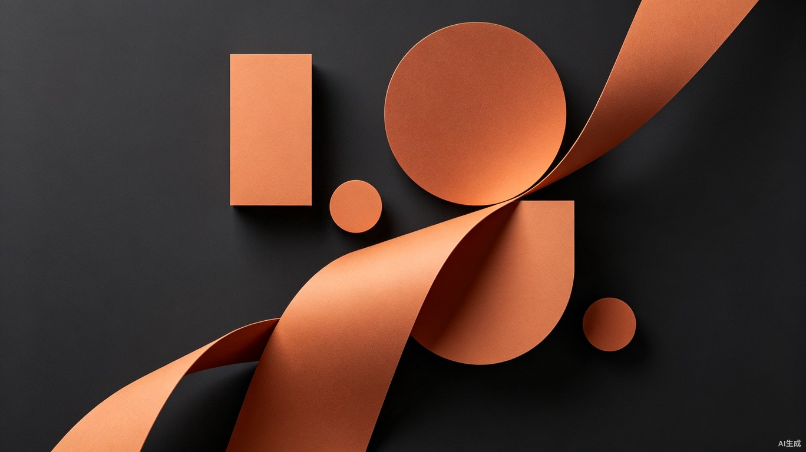

生产总览
实时追踪生产 KPI、流水线状态与产能趋势
数据更新于 10:42
今日产出
247
panels
+12.5%
较昨日
活跃项目
38
个
5 即将截止
完成率
87.3
%
+2.1%
较上周
平均生产时长
4.2
h
-0.3h
较上周
01 /
生产流水线
剧本创作
12/15
80%
角色设计
8/12
67%
场景制作
6/10
60%
分镜绘制
18/25
72%
审核校对
4/8
50%
发布上线
2/5
40%
02 /
最近动态
都
10:32
都市暗影录
第3话分镜完成
星
09:15
星河战记
角色设计审核通过
校
08:47
校园怪谈
新项目创建
时
08:20
时空迷局
场景素材更新
末
07:55
末日方舟
第5话发布上线
古
07:30
古墓迷踪
剧本导入完成
03 /
生产趋势
总产出
审核通过
250
200
150
100
50
0
总产出
180
审核
145
总产出
210
审核
168
总产出
195
审核
160
总产出
240
审核
195
总产出
247
审核
210
总产出
165
审核
130
总产出
120
审核
95
周一
周二
周三
周四
周五
周六
周日
04 /
快捷操作
共 38 个活跃项目正在生产中
查看全部项目